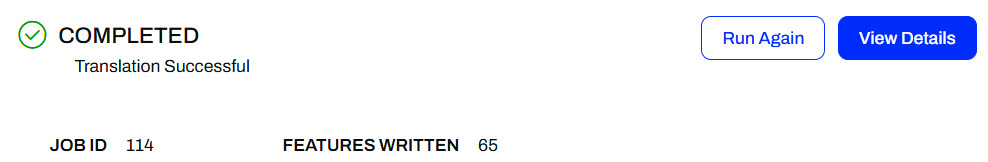
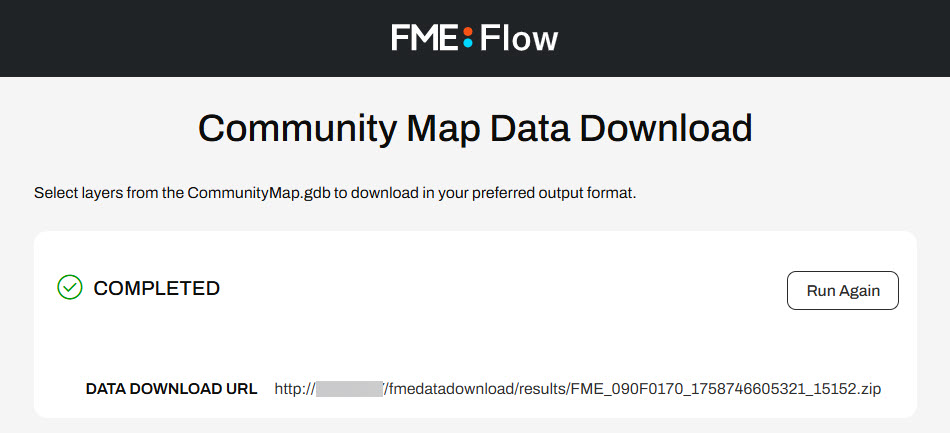
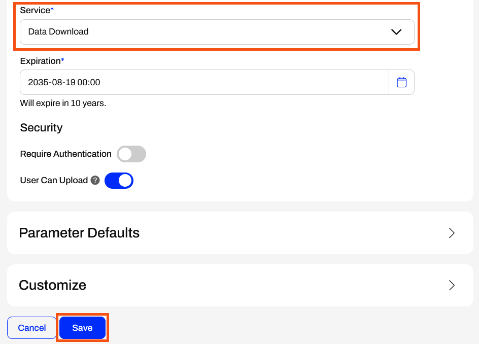
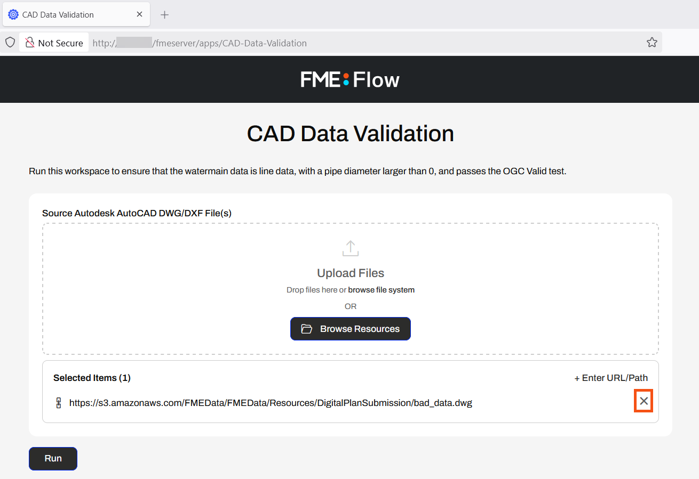
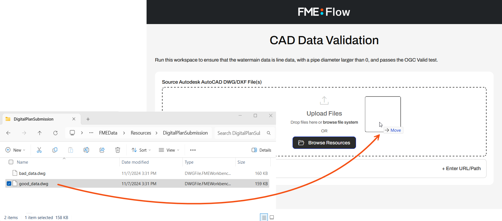
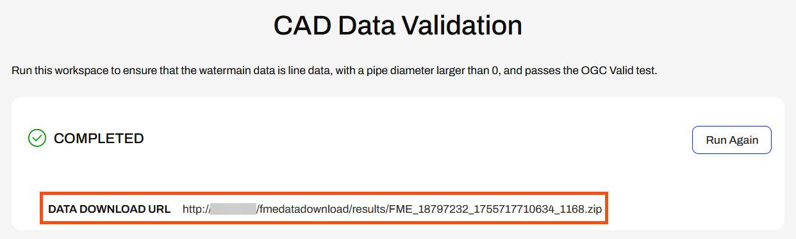
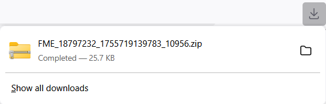
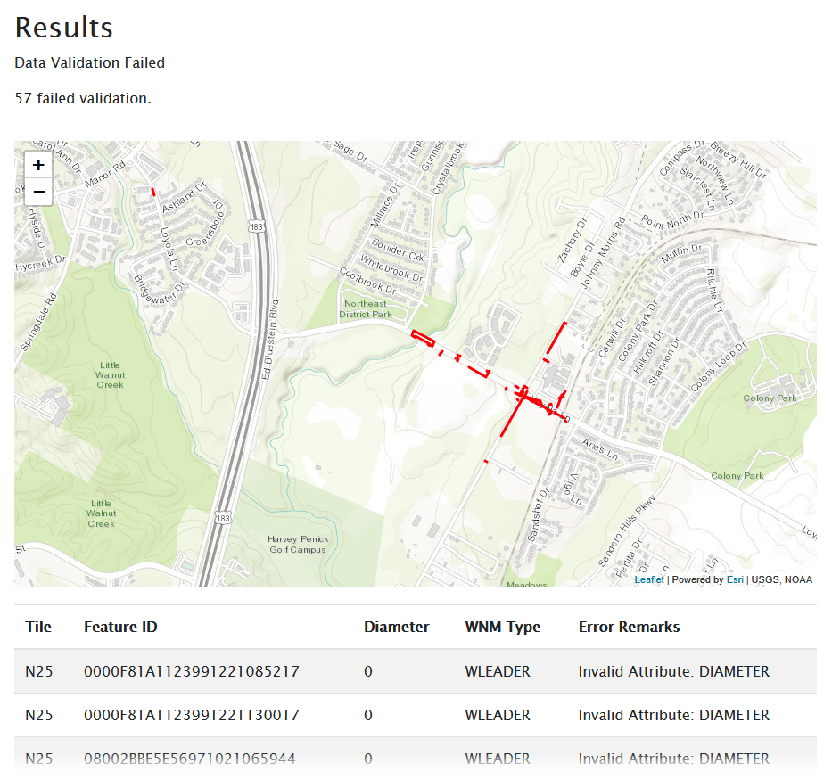

Learning Objectives
After completing this lesson, you'll be able to:
- Understand the different FME Flow transformation services.
- Set and change the transformation service for a Workspace App.
Resources
- Starting FME Flow project | C:\FMEData\Workspaces\CreateDataIntegrationApps\create-data-integration-apps--starting-project.fsproject
- good_data.dwg | C:\FMEData\Resources\DigitalPlanSubmission\good_data.dwg
The content used in this lesson builds on the previous lesson. To do this exercise, please complete the exercise in Create a Workspace App.
If you're taking a live Safe Software-hosted training course or using an on-demand lab for this course, we've already imported the content for this lesson into your FME Flow.
If you're completing this lesson with your own FME Flow, you must import the starting project with the content into your FME Flow.
Expand for Steps to Import the Starting Project
2) Upload the
create_data_integration_apps.jceks encryption key to your FME Flow. An fmesuperuser who has permission to System Configuration > Security > System Encryption must perform this action. For more information, see our documentation on
System Encryption.
3) Navigate to your FME Flow and open Projects. Click Import.
5) The first step is Preview Content, where you may choose not to overwrite existing items. If all your items are New Items, you don't need to worry about overwriting existing items. Click Continue.
6) The next step is to select connections and tokens to import. This project doesn't contain any connections, parameters, tokens, or users to import. Click Continue through Step 2 and Step 3. Click Import Project on Step 4. The project will import and display its import status from the same page.
If the project import failed, check that you uploaded the encryption key and repeat the process. If the issue persists, please contact us at train@safe.com.
FME Flow Services
When you publish a workspace to FME Flow, the publishing wizard prompts you to register your workspace with a service. Then you must select a service to use when your workspace runs on FME Flow. For a workspace to run on FME Flow, you must register it with one of the FME Flow services; otherwise, the FME Engine will not know how to carry out your translation.

The most common services are the Job Submitter, Data Download, and Data Streaming services, all of which are transformation services. The transformation services control how FME transforms and presents your output data to you when you run your workspace on FME Flow.

To change the services a workspace is registered with, you may publish the workspace from FME Form to FME Flow again or edit the services from the repository in Workspaces. For training on editing a workspace's registered services, see Deploy Workspaces on FME Flow or our documentation on Transformation Services.
Job Submitter
The Job Submitter transformation service is most similar to running your workspaces on FME Workbench. The FME Engines execute the translation and write the data to the locations specified in the workspace's writers. When the translation is complete, FME Flow displays a status and the number of features written.

Data Download
FME Flow's Data Download service packages the output data into a zipped folder and presents it to the user running the workspace as a downloadable URL. You click the URL link, and the zipped file downloads. From there, you extract the folder and access the data. If you register a writer with the data download service, it will not write the data to the location specified in the writer; instead, it will package the data into a zipped file by default. It is possible to configure your workspace writers to write the data and also package it into a zip folder, with duplicate writers and only one included in the data download service.

Data Streaming
The Data Streaming service is similar to the Data Download service in that FME Flow doesn't write the data to the locations specified in the writers by default. Instead, FME Flow immediately streams the data back to you in the browser. You should be aware that only some formats are compatible with the data streaming service, including HTML, PNG, KML, GeoRSS, GeoJSON, PDF, and more. If your output format is not compatible or the workspace produces multiple outputs, FME Flow will package the data into a zipped file and immediately download it instead.


The Data Download and Data Streaming services are beneficial for FME Flow Workspace Apps. These services enable you to access output data immediately without needing to navigate to the destination data storage location. With Workspace Apps, these services complete self-serve workflows by allowing users to access their data either by downloading it or streaming it in the browser.
Workspace App Services
When you create a Workspace App, you must select the service you would like to use to run your workspace. While you may register a workspace with multiple services, a workspace can only run using one service at a time, and each app can only use one service at a time. For example, you may register your workspace with both the Job Submitter and Data Download services; however, when creating your app, you must select either the Job Submitter or Data Download service to run the workspace. Each time the app runs the workspace, it uses that transformation service. You can edit the app and change the service, but it will only ever be able to run with one service at a time.

When you run a Workspace App, FME Flow presents the Data Download and Data Streaming outputs to you in the same way as running a workspace manually on FME Flow. There's no difference in output when using an app; it simply presents the output to you on the app browser page.

Exercise

Jennifer continues working with her CAD Data Validation app. In this workflow, it's slightly inconvenient for end-users to find and open the HTML report to receive the validation results. Jennifer thinks a different transformation service would be better for this workflow.
Follow along with Jennifer's steps as she alters the transformation service her workspace uses in her app.
1) Edit Workspace App
Jennifer returns to FME Flow and selects "Manage Workspace Apps" from the side menu under "Flow Apps."

She clicks on her CAD-Data-Validation app to edit it.
The Editing Workspace App page is very similar to the options for creating a Workspace App. Jennifer scrolls down to service, expands the drop-down options, and selects Data Download.

Jennifer expands the Parameter Defaults again. The Destination HTML File parameter is no longer listed. Instead of writing the HTML report to the location a user enters, FME Flow packages the HTML report in a zip file and presents a downloadable URL to the user. The only parameter is the Source AutoCAD File(s).

Jennifer only altered the service to Data Download in her editing session. She clicks Save at the bottom of the form.

2) Open and Run Workspace App
After saving her app, Jennifer clicks the URL to reopen it. This time, she will use different source data, so she clicks the X to remove the default bad_data.dwg dataset.

Jennifer opens the file explorer and navigates to good_data.dwg (C:\FMEData\Resources\DigitalPlanSubmission\good_data.dwg). She drags the good_data.dwg file into the source file Upload Files box.

Once the file is uploaded, she clicks Run to submit the workspace for execution on an FME Flow Engine.

FME Flow processes the workspace with the new input data, packages the output HTML file into a zip folder, and presents Jennifer with the Data Download URL. She clicks on the URL to download the zip file.


Jennifer opens the zip file in Downloads and extracts the file contents. She opens the HTML_1 folder and opens the validation_results.html file.

The HTML report indicates that data validation was successful, and since no features failed validation, there is no table displayed.

3) Change Service to Data Streaming
While FME Flow's Data Download service is convenient, Jennifer realizes that the Data Streaming service would better suit this workflow to minimize the steps required by end-users to access the validation results.
She returns to FME Flow and edits her CAD-Data-Validation app again. She changes the Service to Data Streaming and saves her app.

4) Run the App with the Data Streaming Service
After saving her app, Jennifer opens it in the browser and reruns it with the bad_data.dwg default source file. While the FME Engine processes the workspace, FME Flow displays a message in the app telling Jennifer that it is processing.

Once the workspace translation completes, FME Flow immediately displays the HTML validation report in Jennifer's web browser.

The Data Streaming service is best suited for Jennifer's workflow, as it eliminates the need for users to navigate to and open the HTML report, thereby returning validation results directly to the app.